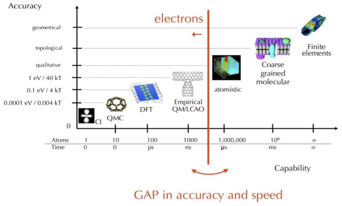

What is mesoscale modelling¶
The mesoscale is a middle or intermediate scale between the microscale (nanoscale) describing individual atoms and the macroscale describing materials as a continuum or bulk. The length scales for the mesoscale typically start at the sizes of individual atoms (nanometres, \(10^{-9}\) m) and extend into millimetres (\(10^{-3}\) m), while time scales start in nanoseconds (\(10^{-9}\) s) and can extend into seconds. Many complex systems act at this mesoscale, including but not limited to surfaces and interfaces, microfluidics (capillary flows dominated by surface tension) and biological membranes.
{kind=link}
Mesoscale modelling methods fill a gap between atomistic methods and those that operate in the continuum, e.g. between classical molecular dynamics and computational fluid dynamics. Due to the scales at which they operate, these methods need to address both microscopic thermodynamics and macroscopic hydrodynamics.
Note
While atomistic methods can technically be used to model systems at the mesoscale or even the macroscale, on their own they are neither the most effective nor the most efficient approaches to model large-scale continuum behaviour such as hydrodynamics.
The modelling entities used at these scales are particles (or ‘beads’) that can represent a number of atoms or molecules. These particles can either:
- represent an explicit (integer) number of atoms/molecules as coarse-grains, or
- be regarded as a mesoscopic representation of a continuum fluid and act as ‘carriers of (bulk) momentum’ .
In the case of the second approach, while the size of a particle might be fixed relative to the size of an atom or molecule, it might be a non-integer multiple and thus the particle cannot be considered as a coarse-grain.
Each approach in selecting particle representations may have an effect on how the mesoscale model is setup and parameterised. For instance, interactions between particles could either be derived from coarse-graining smaller scale models or be chosen to give correct macroscopic behaviour. A hybrid of the two parameterisation approaches is also possible, such as parameterising explicitly coarse-grained particles to give larger-scale thermodynamic behaviours (e.g. energies of mixing).
The selection may also influence the choice of how the particles’ motion is evolved over time and thus the specific mesoscale modelling method. The motion of explicitly coarse-grained particles often needs to be explicitly tracked to give correct (phenomenological) behaviour towards the microscale, while particles representing a larger-scale fluid can often be evolved using a probabilistic approach.